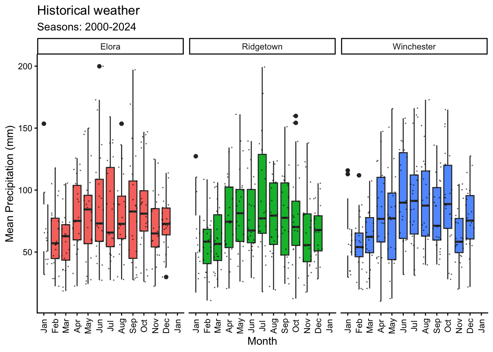
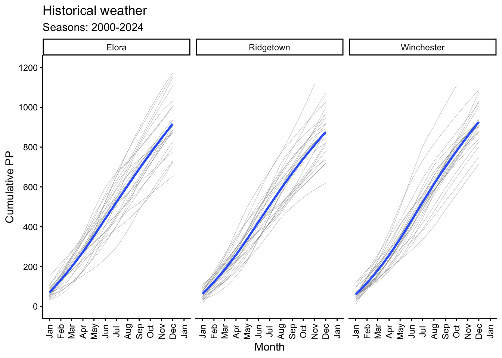
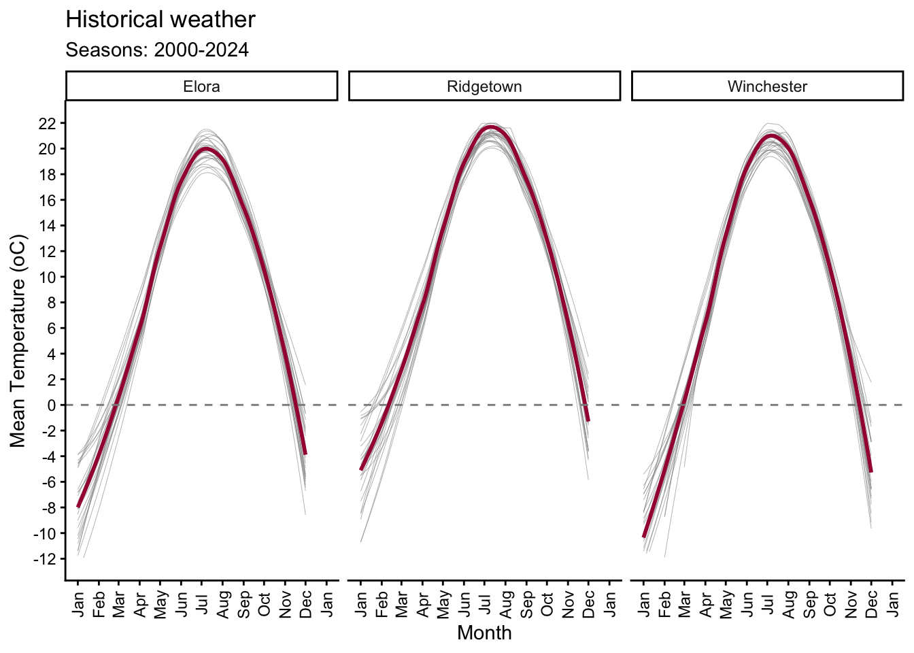
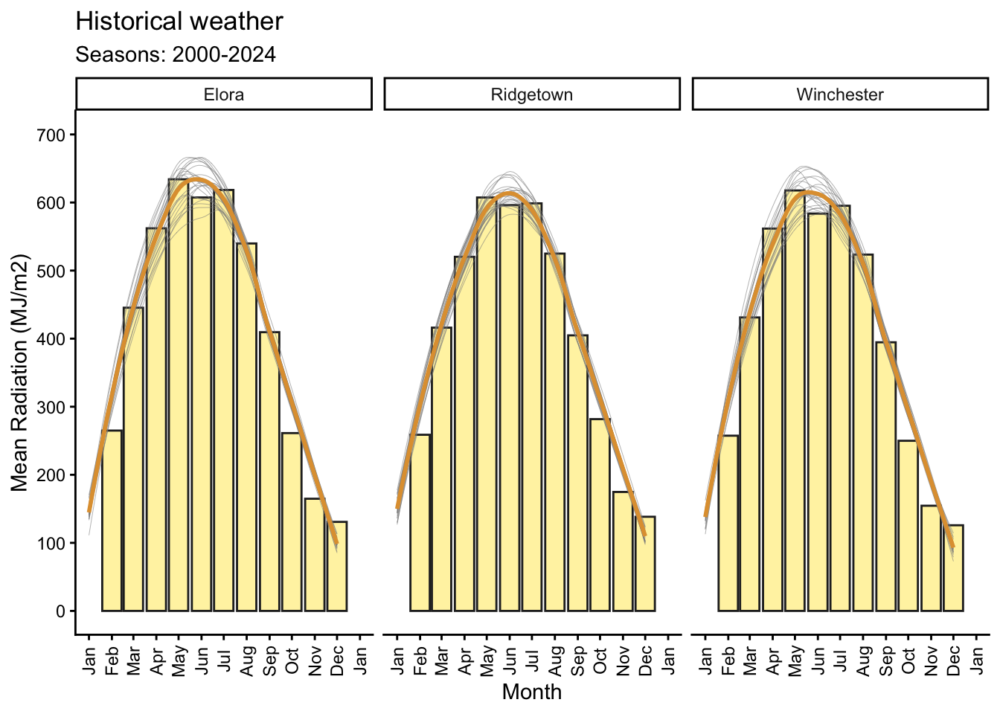

library(pacman)
p_load(dplyr, tidyr, stringr) # Data wrangling
p_load(purrr) # Iteration
p_load(lubridate) # Date operations
p_load(kableExtra) # Table formatting to better display
p_load(daymetr) # Weather data from Daymet
p_load(skimr) # Summarizing weather data
p_load(vegan) # Shannon Diversity Index
p_load(writexl) # save excel files
p_load(ggplot2) # PlottingRetrieving and Processing Weather Data with R
weather data
API
data wrangling
daymetr
Description
This lesson provides a step-by-step guide on retrieving and processing daily-weather data using R. It covers downloading data from DAYMET and processing it to generate weather summaries useful for agricultural research. We will put several of our previous lessons in action!
This tutorial focuses on how to:
- Download daily weather data from DAYMET.
- Process the retrieved data to calculate agronomic variables.
- Summarize weather data for different time intervals.
This is a reproducible workflow that can be adapted to different locations, crops, and time periods. The code is organized into functions to facilitate its use and adaptation. For a full version, please see Correndo et al. (2021)
Required packages
1 Locations & Dates Data
# Locations
df_sites <- data.frame(
ID = c('1', '2', '3'),
Crop = c('Corn', 'Corn', 'Soybean'),
Site = c('Elora', 'Ridgetown', 'Winchester'),
latitude = c(43.6489, 42.4464, 45.0833),
longitude = c(-80.4037, -81.8835, -75.3500)
)
# Dates
df_time <- data.frame(
ID = c('1', '2', '3'), # column in common to match and merge
Start = c('2021-04-25', '2022-05-01', '2023-05-20'), # date to start collecting weather
End = c('2021-09-30', '2022-09-30', '2023-10-10'), # date to stop collecting weather
# Add key crop phenology dates
Flo = c('2021-07-20', '2022-07-21', '2023-07-15'), # Flowering dates for processing
SeFi = c('2021-08-08', '2022-08-10', '2023-08-15') # Seed filling dates for processing
) %>%
# Express start and end as dates using "across"
dplyr::mutate(across(Start:SeFi, ~as.Date(., format = '%Y-%m-%d')))
# Merge
df_input <- left_join(df_sites, df_time, by = "ID")2 Retrieving Weather Data from DAYMET

daymetr is a programmatic interface to the Daymet web services. Allows for easy downloads of Daymet climate data directly to your R workspace or your computer. Spatial resolution: ~1 km2. Temporal resolution: daily. Historical data since year 1980.
Official Website: http://bluegreen-labs.github.io/daymetr/
2.1 How to cite the daymetr package
Hufkens K., Basler J. D., Milliman T. Melaas E., Richardson A.D. 2018 An integrated phenology modelling framework in R: Phenology modelling with phenor. Methods in Ecology & Evolution, 9: 1-10. https://doi.org/10.1111/2041-210X.12970
2.2 Evapotranspiration
Daymet does not provide data on reference evapotranspiration (\(\text{ET}_0\)). However, it is possible to estimate \(\text{ET}_0\) using the Hargreaves and Samani approach, which only requires temperature information (Hargreaves and Samani, 1985; Raziei and Pereira, 2013). Nonetheless, the \(\text{ET}_{0-HS}\) equation is reported to give unreliable estimates for daily \(ET0\) and therefore it should be used for 10-day periods at the shortest (Cobaner et al., 2017).
2.2.1 Constants
# Constants for ET0 (Cobaner et al., 2017)
# Solar constant:
Gsc <- 0.0820 # (MJ m-2 min-1)
# Radiation adjustment coefficient (Samani, 2004)
kRs <- 0.172.3 Function to retrieve
We can retrieve a function from a separate file. This is useful for keeping the code organized and to avoid having a long script.
# Name of functions using dots (.) instead of underscore (_)
# We keep underscore for other objects
source("functions/weather_daymet.R")2.4 Run retrieving function
# Specify input = dataframe containing sites-data
# Specify Days prior planting. Default is dpp = 0. Here we use dpp = 30.
df_weather_daymet <- weather.daymet(input = df_input, dpp = 30)Downloading DAYMET data for: 1 at 43.6489/-80.4037 latitude/longitude !Done !Downloading DAYMET data for: 2 at 42.4464/-81.8835 latitude/longitude !Done !Downloading DAYMET data for: 3 at 45.0833/-75.35 latitude/longitude !Done !# Overview of the variables (useful checking for missing values):
skimr::skim(df_weather_daymet)| Name | df_weather_daymet |
| Number of rows | 546 |
| Number of columns | 25 |
| _______________________ | |
| Column type frequency: | |
| character | 3 |
| Date | 5 |
| numeric | 17 |
| ________________________ | |
| Group variables | None |
Variable type: character
| skim_variable | n_missing | complete_rate | min | max | empty | n_unique | whitespace |
|---|---|---|---|---|---|---|---|
| ID | 0 | 1 | 1 | 1 | 0 | 3 | 0 |
| Crop | 0 | 1 | 4 | 7 | 0 | 2 | 0 |
| Site | 0 | 1 | 5 | 10 | 0 | 3 | 0 |
Variable type: Date
| skim_variable | n_missing | complete_rate | min | max | median | n_unique |
|---|---|---|---|---|---|---|
| Start | 0 | 1 | 2021-04-25 | 2023-05-20 | 2022-05-01 | 3 |
| End | 0 | 1 | 2021-09-30 | 2023-10-10 | 2022-09-30 | 3 |
| Flo | 0 | 1 | 2021-07-20 | 2023-07-15 | 2022-07-21 | 3 |
| SeFi | 0 | 1 | 2021-08-08 | 2023-08-15 | 2022-08-10 | 3 |
| Date | 0 | 1 | 2021-03-26 | 2023-10-10 | 2022-06-23 | 546 |
Variable type: numeric
| skim_variable | n_missing | complete_rate | mean | sd | p0 | p25 | p50 | p75 | p100 | hist |
|---|---|---|---|---|---|---|---|---|---|---|
| latitude | 0 | 1 | 43.70 | 1.07 | 42.45 | 42.45 | 43.65 | 45.08 | 45.08 | ▇▁▇▁▇ |
| longitude | 0 | 1 | -79.29 | 2.76 | -81.88 | -81.88 | -80.40 | -75.35 | -75.35 | ▇▇▁▁▇ |
| DOY | 0 | 1 | 185.58 | 53.22 | 85.00 | 140.25 | 186.00 | 231.00 | 283.00 | ▆▇▇▇▇ |
| Year | 0 | 1 | 2021.97 | 0.82 | 2021.00 | 2021.00 | 2022.00 | 2023.00 | 2023.00 | ▇▁▇▁▇ |
| Month | 0 | 1 | 6.62 | 1.74 | 3.00 | 5.00 | 7.00 | 8.00 | 10.00 | ▃▅▇▅▅ |
| Day | 0 | 1 | 15.91 | 8.93 | 1.00 | 8.00 | 16.00 | 24.00 | 31.00 | ▇▇▆▇▇ |
| DL | 0 | 1 | 13.95 | 1.14 | 10.96 | 13.10 | 14.21 | 14.96 | 15.44 | ▁▂▃▅▇ |
| PP | 0 | 1 | 2.72 | 5.66 | 0.00 | 0.00 | 0.00 | 3.29 | 44.25 | ▇▁▁▁▁ |
| Rad | 0 | 1 | 18.32 | 5.60 | 3.52 | 14.19 | 17.99 | 22.82 | 30.23 | ▁▅▇▆▃ |
| SWE | 0 | 1 | 0.26 | 2.06 | 0.00 | 0.00 | 0.00 | 0.00 | 27.78 | ▇▁▁▁▁ |
| Tmax | 0 | 1 | 22.31 | 6.52 | -0.30 | 18.77 | 23.88 | 26.99 | 33.85 | ▁▂▃▇▅ |
| Tmin | 0 | 1 | 10.87 | 6.06 | -6.59 | 6.74 | 11.77 | 15.51 | 22.75 | ▁▃▅▇▃ |
| VP | 0 | 1 | 1.36 | 0.51 | 0.33 | 0.96 | 1.35 | 1.73 | 2.77 | ▅▇▇▅▁ |
| Tmean | 0 | 1 | 16.59 | 6.06 | -2.68 | 12.83 | 17.92 | 21.16 | 27.40 | ▁▂▃▇▅ |
| ET0_HS | 0 | 1 | 4.08 | 1.27 | 0.93 | 3.18 | 4.25 | 5.01 | 7.44 | ▂▆▇▆▁ |
| EPE_i | 0 | 1 | 0.01 | 0.12 | 0.00 | 0.00 | 0.00 | 0.00 | 1.00 | ▇▁▁▁▁ |
| ETE_i | 0 | 1 | 0.06 | 0.24 | 0.00 | 0.00 | 0.00 | 0.00 | 1.00 | ▇▁▁▁▁ |
# Exporting data as a .csv file
# write.csv(df.weather.daymet, row.names = FALSE, na = '', file = paste0(path, 'Output_daymet.csv'))3 Processing Weather Data
3.1 Define time intervals
In this section we create time intervals during the cropping season using pre-specified dates as columns at the initial data table with site information.
The user can apply: i) a unique seasonal interval (season), ii) even intervals (even), or iii) customized intervals (custom).
3.1.1 Full-season interval
# Defining season-intervals
season_interval <-
df_input %>%
dplyr::mutate(Interval = "Season") %>%
dplyr::rename(Start.in = Start, End.in = End) %>%
dplyr::select(ID, Site, Interval, Start.in, End.in)
# Creating a table to visualize results
kable(season_interval) %>%
kable_styling(latex_options = c("striped"),
position = "center", font_size = 10)| ID | Site | Interval | Start.in | End.in |
|---|---|---|---|---|
| 1 | Elora | Season | 2021-04-25 | 2021-09-30 |
| 2 | Ridgetown | Season | 2022-05-01 | 2022-09-30 |
| 3 | Winchester | Season | 2023-05-20 | 2023-10-10 |
3.1.2 Even-intervals
# Number of intervals:
n <- 4
# Days prior planting:
dpp <- 30
# Defining even-intervals:
even_intervals <-
df_input %>%
# Create new data:
dplyr::mutate(Intervals =
purrr::map2(.x = Start, .y = End,
.f = ~ data.frame(
Interval = c("Prev", # Prior to start date
LETTERS[0:n]), # Each interval from start date
# Start
Start.in = c(.x - dpp, seq.Date(.x, .y + 1, length.out = n + 1)[1:n]), # End
End.in = c(.x - 1, seq.Date(.x, .y + 1, length.out = n + 1)[2:(n + 1)]))) ) %>%
# Selecting columns:
dplyr::select(ID, Site, Intervals) %>%
tidyr::unnest(cols = c(Intervals))
# Creating a table to visualize results
kable(even_intervals) %>%
kable_styling(latex_options = c("striped"),
position = "center", font_size = 10)| ID | Site | Interval | Start.in | End.in |
|---|---|---|---|---|
| 1 | Elora | Prev | 2021-03-26 | 2021-04-24 |
| 1 | Elora | A | 2021-04-25 | 2021-06-03 |
| 1 | Elora | B | 2021-06-03 | 2021-07-13 |
| 1 | Elora | C | 2021-07-13 | 2021-08-22 |
| 1 | Elora | D | 2021-08-22 | 2021-10-01 |
| 2 | Ridgetown | Prev | 2022-04-01 | 2022-04-30 |
| 2 | Ridgetown | A | 2022-05-01 | 2022-06-08 |
| 2 | Ridgetown | B | 2022-06-08 | 2022-07-16 |
| 2 | Ridgetown | C | 2022-07-16 | 2022-08-23 |
| 2 | Ridgetown | D | 2022-08-23 | 2022-10-01 |
| 3 | Winchester | Prev | 2023-04-20 | 2023-05-19 |
| 3 | Winchester | A | 2023-05-20 | 2023-06-25 |
| 3 | Winchester | B | 2023-06-25 | 2023-07-31 |
| 3 | Winchester | C | 2023-07-31 | 2023-09-05 |
| 3 | Winchester | D | 2023-09-05 | 2023-10-11 |
3.1.3 Custom-intervals
# Count the number of interval columns (assuming intervals start at column "Start")
i <- df_input %>% dplyr::select(Start:last_col()) %>% ncol()
# Defining custom-intervals
custom_intervals <-
df_input %>%
dplyr::mutate(Intervals = # Create
purrr::pmap(# List of object to iterate over
.l = list(x = Start - dpp,
y = Start,
z = Flo,
m = SeFi,
k = End),
# The function to run
.f = function(x, y, z, m, k) {
data.frame(# New data
Interval = c(LETTERS[1:i]),
Name = c("Prev", "Plant-Flo", "Flo-SeFi", "SeFi-End"),
Start.in = c(x, y, z, m),
End.in = c(y-1, z-1, m-1, k))}
)) %>%
# Selecting columns:
dplyr::select(ID,, Site, Intervals) %>%
tidyr::unnest(cols = c(Intervals))
# Creating a table to visualize results:
kable(custom_intervals) %>%
kable_styling(latex_options = c("striped"), position = "center", font_size = 10)| ID | Site | Interval | Name | Start.in | End.in |
|---|---|---|---|---|---|
| 1 | Elora | A | Prev | 2021-03-26 | 2021-04-24 |
| 1 | Elora | B | Plant-Flo | 2021-04-25 | 2021-07-19 |
| 1 | Elora | C | Flo-SeFi | 2021-07-20 | 2021-08-07 |
| 1 | Elora | D | SeFi-End | 2021-08-08 | 2021-09-30 |
| 2 | Ridgetown | A | Prev | 2022-04-01 | 2022-04-30 |
| 2 | Ridgetown | B | Plant-Flo | 2022-05-01 | 2022-07-20 |
| 2 | Ridgetown | C | Flo-SeFi | 2022-07-21 | 2022-08-09 |
| 2 | Ridgetown | D | SeFi-End | 2022-08-10 | 2022-09-30 |
| 3 | Winchester | A | Prev | 2023-04-20 | 2023-05-19 |
| 3 | Winchester | B | Plant-Flo | 2023-05-20 | 2023-07-14 |
| 3 | Winchester | C | Flo-SeFi | 2023-07-15 | 2023-08-14 |
| 3 | Winchester | D | SeFi-End | 2023-08-15 | 2023-10-10 |
3.2 Summary function
For each of the period or interval of interest a variety of variables can be created. Here, we present a set of variables that can capture environmental variations that might be missing by analyzing standard weather data (precipitations, temperature, radiation). These variables represent an example that was used for studying influence of weather in corn yields by Correndo et al. (2021).
3.2.1 Load function
source("functions/summary_daymet.R")3.3 Run summaries
3.3.1 Seasonal
# Run the summary
# input = dataframe containing the data (from daymet).
# intervals = type of intervals (season, custom or even)
season_summary_daymet <-
summary.daymet(input = df_weather_daymet,
intervals = season_interval)
# Skim data
skimr::skim(season_summary_daymet)| Name | season_summary_daymet |
| Number of rows | 3 |
| Number of columns | 20 |
| _______________________ | |
| Column type frequency: | |
| character | 4 |
| Date | 2 |
| numeric | 14 |
| ________________________ | |
| Group variables | None |
Variable type: character
| skim_variable | n_missing | complete_rate | min | max | empty | n_unique | whitespace |
|---|---|---|---|---|---|---|---|
| ID | 0 | 1 | 1 | 1 | 0 | 3 | 0 |
| Interval | 0 | 1 | 6 | 6 | 0 | 1 | 0 |
| Crop | 0 | 1 | 4 | 7 | 0 | 2 | 0 |
| Site | 0 | 1 | 5 | 10 | 0 | 3 | 0 |
Variable type: Date
| skim_variable | n_missing | complete_rate | min | max | median | n_unique |
|---|---|---|---|---|---|---|
| Start.in | 0 | 1 | 2021-04-25 | 2023-05-20 | 2022-05-01 | 3 |
| End.in | 0 | 1 | 2021-09-30 | 2023-10-10 | 2022-09-30 | 3 |
Variable type: numeric
| skim_variable | n_missing | complete_rate | mean | sd | p0 | p25 | p50 | p75 | p100 | hist |
|---|---|---|---|---|---|---|---|---|---|---|
| Dur | 0 | 1 | 151.00 | 7.55 | 143.00 | 147.50 | 152.00 | 155.00 | 158.00 | ▇▁▇▁▇ |
| PP | 0 | 1 | 415.30 | 73.58 | 331.50 | 388.27 | 445.05 | 457.20 | 469.35 | ▃▁▁▁▇ |
| Tmean | 0 | 1 | 18.42 | 1.12 | 17.18 | 17.94 | 18.71 | 19.04 | 19.37 | ▇▁▁▇▇ |
| Rad | 0 | 1 | 2778.49 | 279.01 | 2461.52 | 2674.26 | 2887.00 | 2936.97 | 2986.94 | ▃▁▁▁▇ |
| VP | 0 | 1 | 224.75 | 13.71 | 216.63 | 216.83 | 217.04 | 228.81 | 240.58 | ▇▁▁▁▃ |
| ET0_HS | 0 | 1 | 657.79 | 35.73 | 616.55 | 646.95 | 677.36 | 678.41 | 679.45 | ▃▁▁▁▇ |
| ETE | 0 | 1 | 11.33 | 4.51 | 7.00 | 9.00 | 11.00 | 13.50 | 16.00 | ▇▁▇▁▇ |
| EPE | 0 | 1 | 2.33 | 1.53 | 1.00 | 1.50 | 2.00 | 3.00 | 4.00 | ▇▇▁▁▇ |
| CHU | 0 | 1 | 3097.65 | 131.86 | 3000.08 | 3022.65 | 3045.22 | 3146.44 | 3247.67 | ▇▁▁▁▃ |
| SDI | 0 | 1 | 0.73 | 0.04 | 0.69 | 0.71 | 0.73 | 0.75 | 0.78 | ▇▁▇▁▇ |
| GDD | 0 | 1 | 1339.05 | 99.58 | 1273.50 | 1281.76 | 1290.02 | 1371.82 | 1453.63 | ▇▁▁▁▃ |
| Q_chu | 0 | 1 | 0.90 | 0.08 | 0.82 | 0.85 | 0.89 | 0.93 | 0.98 | ▇▁▇▁▇ |
| Q_gdd | 0 | 1 | 2.08 | 0.23 | 1.91 | 1.95 | 1.99 | 2.17 | 2.35 | ▇▁▁▁▃ |
| AWDR | 0 | 1 | 305.30 | 66.55 | 228.50 | 285.01 | 341.51 | 343.71 | 345.90 | ▃▁▁▁▇ |
# Creating a table to visualize results
kbl(season_summary_daymet) %>%
kable_styling(font_size = 7, position = "center",
latex_options = c("scale_down"))| ID | Interval | Start.in | End.in | Crop | Site | Dur | PP | Tmean | Rad | VP | ET0_HS | ETE | EPE | CHU | SDI | GDD | Q_chu | Q_gdd | AWDR |
|---|---|---|---|---|---|---|---|---|---|---|---|---|---|---|---|---|---|---|---|
| 1 | Season | 2021-04-25 | 2021-09-30 | Corn | Elora | 158 | 469.35 | 17.17851 | 2986.936 | 216.6294 | 677.3595 | 7 | 4 | 3045.216 | 0.7276272 | 1273.500 | 0.9808618 | 2.345455 | 341.5118 |
| 2 | Season | 2022-05-01 | 2022-09-30 | Corn | Ridgetown | 152 | 331.50 | 19.36694 | 2887.004 | 240.5812 | 679.4511 | 16 | 2 | 3247.665 | 0.6892949 | 1453.635 | 0.8889474 | 1.986058 | 228.5013 |
| 3 | Season | 2023-05-20 | 2023-10-10 | Soybean | Winchester | 143 | 445.05 | 18.70930 | 2461.524 | 217.0387 | 616.5490 | 11 | 1 | 3000.080 | 0.7772147 | 1290.015 | 0.8204861 | 1.908136 | 345.8994 |
3.3.2 Even
# Run the summary
# input = dataframe containing the data (from daymet).
# intervals = type of intervals (season, custom or even)
even_summary_daymet <-
summary.daymet(input = df_weather_daymet,
intervals = even_intervals)
# Skim data
skimr::skim(even_summary_daymet)| Name | even_summary_daymet |
| Number of rows | 15 |
| Number of columns | 20 |
| _______________________ | |
| Column type frequency: | |
| character | 4 |
| Date | 2 |
| numeric | 14 |
| ________________________ | |
| Group variables | None |
Variable type: character
| skim_variable | n_missing | complete_rate | min | max | empty | n_unique | whitespace |
|---|---|---|---|---|---|---|---|
| ID | 0 | 1 | 1 | 1 | 0 | 3 | 0 |
| Interval | 0 | 1 | 1 | 4 | 0 | 5 | 0 |
| Crop | 0 | 1 | 4 | 7 | 0 | 2 | 0 |
| Site | 0 | 1 | 5 | 10 | 0 | 3 | 0 |
Variable type: Date
| skim_variable | n_missing | complete_rate | min | max | median | n_unique |
|---|---|---|---|---|---|---|
| Start.in | 0 | 1 | 2021-03-26 | 2023-09-05 | 2022-06-08 | 15 |
| End.in | 0 | 1 | 2021-04-24 | 2023-10-11 | 2022-07-16 | 15 |
Variable type: numeric
| skim_variable | n_missing | complete_rate | mean | sd | p0 | p25 | p50 | p75 | p100 | hist |
|---|---|---|---|---|---|---|---|---|---|---|
| Dur | 0 | 1 | 36.20 | 4.00 | 29.00 | 36.00 | 38.00 | 39.00 | 40.00 | ▃▁▁▃▇ |
| PP | 0 | 1 | 98.00 | 46.14 | 20.54 | 68.25 | 90.72 | 124.79 | 190.88 | ▆▇▇▃▃ |
| Tmean | 0 | 1 | 16.23 | 5.27 | 6.20 | 13.63 | 17.15 | 19.96 | 22.24 | ▂▂▁▅▇ |
| Rad | 0 | 1 | 661.92 | 145.37 | 450.04 | 543.88 | 649.96 | 776.50 | 892.91 | ▇▆▃▇▃ |
| VP | 0 | 1 | 49.40 | 17.63 | 18.88 | 39.66 | 53.65 | 62.80 | 72.28 | ▆▂▆▇▇ |
| ET0_HS | 0 | 1 | 147.72 | 46.27 | 68.05 | 114.39 | 160.16 | 184.08 | 206.72 | ▂▂▃▂▇ |
| ETE | 0 | 1 | 2.27 | 2.52 | 0.00 | 0.00 | 2.00 | 3.00 | 8.00 | ▇▆▁▁▂ |
| EPE | 0 | 1 | 0.53 | 0.83 | 0.00 | 0.00 | 0.00 | 1.00 | 3.00 | ▇▅▁▁▁ |
| CHU | 0 | 1 | 656.35 | 284.42 | 111.78 | 535.39 | 729.39 | 876.21 | 944.22 | ▃▁▁▅▇ |
| SDI | 0 | 1 | 0.64 | 0.07 | 0.56 | 0.59 | 0.64 | 0.67 | 0.81 | ▇▆▇▁▂ |
| GDD | 0 | 1 | 280.44 | 137.50 | 36.71 | 215.41 | 296.47 | 400.84 | 461.30 | ▅▂▅▅▇ |
| Q_chu | 0 | 1 | 1.41 | 1.10 | 0.63 | 0.76 | 0.84 | 1.59 | 4.54 | ▇▁▁▁▁ |
| Q_gdd | 0 | 1 | 3.75 | 3.53 | 1.51 | 1.81 | 1.96 | 4.13 | 13.83 | ▇▂▁▁▁ |
| AWDR | 0 | 1 | 64.09 | 33.76 | 11.46 | 45.54 | 56.92 | 78.87 | 139.77 | ▅▇▆▂▃ |
# Creating a table to visualize results
kbl(even_summary_daymet) %>%
kable_styling(font_size = 7, position = "center",
latex_options = c("scale_down"))| ID | Interval | Start.in | End.in | Crop | Site | Dur | PP | Tmean | Rad | VP | ET0_HS | ETE | EPE | CHU | SDI | GDD | Q_chu | Q_gdd | AWDR |
|---|---|---|---|---|---|---|---|---|---|---|---|---|---|---|---|---|---|---|---|
| 1 | Prev | 2021-03-26 | 2021-04-24 | Corn | Elora | 29 | 79.48 | 6.267931 | 460.4183 | 18.87947 | 68.32607 | 0 | 0 | 154.6380 | 0.6003913 | 51.060 | 2.9773933 | 9.017201 | 47.71910 |
| 1 | A | 2021-04-25 | 2021-06-03 | Corn | Elora | 40 | 51.97 | 11.462000 | 892.9099 | 32.99382 | 160.15896 | 0 | 0 | 449.2242 | 0.5655066 | 174.070 | 1.9876708 | 5.129603 | 29.38938 |
| 1 | B | 2021-06-03 | 2021-07-13 | Corn | Elora | 40 | 130.87 | 19.800875 | 756.3732 | 65.72674 | 199.67338 | 2 | 1 | 931.2573 | 0.7020210 | 399.490 | 0.8122064 | 1.893347 | 91.87349 |
| 1 | C | 2021-07-13 | 2021-08-22 | Corn | Elora | 40 | 95.63 | 20.127000 | 796.6236 | 65.08540 | 189.50500 | 2 | 0 | 944.2226 | 0.6839553 | 406.645 | 0.8436820 | 1.959015 | 65.40664 |
| 1 | D | 2021-08-22 | 2021-10-01 | Corn | Elora | 39 | 190.88 | 17.150641 | 554.8840 | 53.64645 | 130.26551 | 3 | 3 | 729.3916 | 0.6219867 | 296.470 | 0.7607492 | 1.871636 | 118.72483 |
| 2 | Prev | 2022-04-01 | 2022-04-30 | Corn | Ridgetown | 29 | 53.63 | 6.195862 | 507.7087 | 20.10403 | 68.04829 | 0 | 0 | 111.7844 | 0.6669155 | 36.715 | 4.5418546 | 13.828371 | 35.76668 |
| 2 | A | 2022-05-01 | 2022-06-08 | Corn | Ridgetown | 39 | 104.36 | 15.800513 | 803.9339 | 48.57693 | 167.84915 | 1 | 1 | 677.3768 | 0.6405580 | 256.750 | 1.1868342 | 3.131193 | 66.84863 |
| 2 | B | 2022-06-08 | 2022-07-16 | Corn | Ridgetown | 38 | 20.54 | 20.658553 | 869.7095 | 60.50965 | 206.72186 | 8 | 0 | 812.2194 | 0.5580330 | 402.185 | 1.0707814 | 2.162461 | 11.46200 |
| 2 | C | 2022-07-16 | 2022-08-23 | Corn | Ridgetown | 38 | 138.96 | 22.235789 | 696.3248 | 72.27967 | 181.42772 | 7 | 1 | 920.7932 | 0.5736522 | 461.300 | 0.7562228 | 1.509484 | 79.71471 |
| 2 | D | 2022-08-23 | 2022-10-01 | Corn | Ridgetown | 38 | 67.64 | 18.656316 | 532.8785 | 60.06231 | 125.97368 | 0 | 0 | 848.1910 | 0.6719260 | 337.475 | 0.6282529 | 1.579016 | 45.44907 |
| 3 | Prev | 2023-04-20 | 2023-05-19 | Soybean | Winchester | 29 | 85.34 | 10.473793 | 591.9513 | 25.05817 | 100.19840 | 0 | 1 | 261.9933 | 0.5697489 | 93.780 | 2.2594144 | 6.312128 | 48.62237 |
| 3 | A | 2023-05-20 | 2023-06-25 | Soybean | Winchester | 36 | 68.85 | 17.041806 | 744.2820 | 46.33343 | 182.88118 | 3 | 0 | 654.8623 | 0.6628592 | 274.325 | 1.1365473 | 2.713140 | 45.63785 |
| 3 | B | 2023-06-25 | 2023-07-31 | Soybean | Winchester | 36 | 172.37 | 21.990278 | 649.9607 | 68.07814 | 185.28684 | 4 | 0 | 904.2380 | 0.8108563 | 428.210 | 0.7187938 | 1.517855 | 139.76731 |
| 3 | C | 2023-07-31 | 2023-09-05 | Soybean | Winchester | 36 | 118.71 | 19.080000 | 620.7637 | 56.26818 | 146.69390 | 1 | 1 | 823.5029 | 0.6573549 | 329.955 | 0.7538087 | 1.881359 | 78.03460 |
| 3 | D | 2023-09-05 | 2023-10-11 | Soybean | Winchester | 36 | 90.72 | 16.455694 | 450.0399 | 47.34861 | 102.79934 | 3 | 0 | 621.5492 | 0.6273709 | 258.120 | 0.7240615 | 1.743530 | 56.91508 |
3.3.3 Custom
# Run the summary
# input = dataframe containing the data (from daymet).
# intervals = type of intervals (season, custom or even)
custom_summary_daymet <-
summary.daymet(input = df_weather_daymet,
intervals = custom_intervals)
# Skim data
skimr::skim(custom_summary_daymet)| Name | custom_summary_daymet |
| Number of rows | 12 |
| Number of columns | 21 |
| _______________________ | |
| Column type frequency: | |
| character | 5 |
| Date | 2 |
| numeric | 14 |
| ________________________ | |
| Group variables | None |
Variable type: character
| skim_variable | n_missing | complete_rate | min | max | empty | n_unique | whitespace |
|---|---|---|---|---|---|---|---|
| ID | 0 | 1 | 1 | 1 | 0 | 3 | 0 |
| Interval | 0 | 1 | 1 | 1 | 0 | 4 | 0 |
| Name | 0 | 1 | 4 | 9 | 0 | 4 | 0 |
| Crop | 0 | 1 | 4 | 7 | 0 | 2 | 0 |
| Site | 0 | 1 | 5 | 10 | 0 | 3 | 0 |
Variable type: Date
| skim_variable | n_missing | complete_rate | min | max | median | n_unique |
|---|---|---|---|---|---|---|
| Start.in | 0 | 1 | 2021-03-26 | 2023-08-15 | 2022-06-10 | 12 |
| End.in | 0 | 1 | 2021-04-24 | 2023-10-10 | 2022-07-30 | 12 |
Variable type: numeric
| skim_variable | n_missing | complete_rate | mean | sd | p0 | p25 | p50 | p75 | p100 | hist |
|---|---|---|---|---|---|---|---|---|---|---|
| Dur | 0 | 1 | 44.50 | 22.44 | 18.00 | 29.00 | 40.50 | 55.25 | 85.00 | ▇▁▅▁▂ |
| PP | 0 | 1 | 121.30 | 57.33 | 50.63 | 74.48 | 118.77 | 167.75 | 215.00 | ▇▃▃▂▆ |
| Tmean | 0 | 1 | 16.16 | 5.52 | 6.20 | 14.57 | 18.46 | 19.04 | 23.40 | ▂▁▁▇▂ |
| Rad | 0 | 1 | 814.98 | 478.95 | 343.20 | 495.89 | 688.73 | 881.31 | 1743.26 | ▇▃▁▁▂ |
| VP | 0 | 1 | 60.63 | 34.82 | 18.88 | 25.44 | 65.07 | 82.40 | 115.34 | ▇▃▁▇▃ |
| ET0_HS | 0 | 1 | 181.73 | 115.00 | 68.05 | 92.79 | 161.76 | 217.97 | 390.34 | ▇▆▁▂▃ |
| ETE | 0 | 1 | 2.75 | 3.41 | 0.00 | 0.00 | 1.00 | 5.00 | 10.00 | ▇▁▂▁▁ |
| EPE | 0 | 1 | 0.67 | 0.98 | 0.00 | 0.00 | 0.00 | 1.00 | 3.00 | ▇▃▁▁▁ |
| CHU | 0 | 1 | 806.71 | 517.34 | 111.78 | 367.24 | 914.93 | 1133.25 | 1559.58 | ▆▃▂▇▃ |
| SDI | 0 | 1 | 0.64 | 0.09 | 0.45 | 0.60 | 0.64 | 0.68 | 0.79 | ▂▂▇▅▃ |
| GDD | 0 | 1 | 344.22 | 226.64 | 36.71 | 141.07 | 379.82 | 485.38 | 698.82 | ▇▂▂▇▃ |
| Q_chu | 0 | 1 | 1.47 | 1.20 | 0.66 | 0.74 | 0.97 | 1.43 | 4.54 | ▇▁▂▁▁ |
| Q_gdd | 0 | 1 | 3.94 | 3.87 | 1.36 | 1.73 | 2.30 | 3.66 | 13.83 | ▇▁▁▁▁ |
| AWDR | 0 | 1 | 80.61 | 43.45 | 23.00 | 44.99 | 78.01 | 110.13 | 148.53 | ▇▂▆▂▆ |
# Creating a table to visualize results
kbl(custom_summary_daymet) %>%
kable_styling(font_size = 7, position = "center",
latex_options = c("scale_down"))| ID | Interval | Name | Start.in | End.in | Crop | Site | Dur | PP | Tmean | Rad | VP | ET0_HS | ETE | EPE | CHU | SDI | GDD | Q_chu | Q_gdd | AWDR |
|---|---|---|---|---|---|---|---|---|---|---|---|---|---|---|---|---|---|---|---|---|
| 1 | A | Prev | 2021-03-26 | 2021-04-24 | Corn | Elora | 29 | 79.48 | 6.267931 | 460.4183 | 18.87947 | 68.32607 | 0 | 0 | 154.6380 | 0.6003913 | 51.060 | 2.9773933 | 9.017201 | 47.71910 |
| 1 | B | Plant-Flo | 2021-04-25 | 2021-07-19 | Corn | Elora | 85 | 190.47 | 15.934588 | 1743.2608 | 107.61957 | 383.46725 | 2 | 1 | 1510.0443 | 0.7061373 | 627.485 | 1.1544434 | 2.778171 | 134.49798 |
| 1 | C | Flo-SeFi | 2021-07-20 | 2021-08-07 | Corn | Elora | 18 | 59.50 | 18.644167 | 389.5612 | 25.56795 | 87.42324 | 0 | 0 | 402.3209 | 0.6187163 | 156.840 | 0.9682848 | 2.483813 | 36.81362 |
| 1 | D | SeFi-End | 2021-08-08 | 2021-09-30 | Corn | Elora | 53 | 215.00 | 18.513396 | 813.1071 | 80.11335 | 196.08039 | 5 | 3 | 1080.6921 | 0.6349615 | 466.215 | 0.7523948 | 1.744060 | 136.51673 |
| 2 | A | Prev | 2022-04-01 | 2022-04-30 | Corn | Ridgetown | 29 | 53.63 | 6.195862 | 507.7087 | 20.10403 | 68.04829 | 0 | 0 | 111.7844 | 0.6669155 | 36.715 | 4.5418546 | 13.828371 | 35.76668 |
| 2 | B | Plant-Flo | 2022-05-01 | 2022-07-20 | Corn | Ridgetown | 80 | 161.38 | 18.402500 | 1726.6087 | 115.33982 | 390.34473 | 10 | 2 | 1559.5834 | 0.6061851 | 698.825 | 1.1070961 | 2.470731 | 97.82615 |
| 2 | C | Flo-SeFi | 2022-07-21 | 2022-08-09 | Corn | Ridgetown | 19 | 50.63 | 23.402368 | 343.2025 | 38.99942 | 94.58351 | 5 | 0 | 462.4571 | 0.4542949 | 252.150 | 0.7421284 | 1.361105 | 23.00095 |
| 2 | D | SeFi-End | 2022-08-10 | 2022-09-30 | Corn | Ridgetown | 51 | 115.13 | 19.234902 | 785.4997 | 81.95346 | 185.19135 | 0 | 0 | 1185.1321 | 0.6618711 | 476.810 | 0.6627951 | 1.647406 | 76.20122 |
| 3 | A | Prev | 2023-04-20 | 2023-05-19 | Soybean | Winchester | 29 | 85.34 | 10.473793 | 591.9513 | 25.05817 | 100.19840 | 0 | 1 | 261.9933 | 0.5697489 | 93.780 | 2.2594144 | 6.312128 | 48.62237 |
| 3 | B | Plant-Flo | 2023-05-20 | 2023-07-14 | Soybean | Winchester | 55 | 135.77 | 18.980818 | 1085.9110 | 83.74737 | 283.62792 | 7 | 0 | 1115.9606 | 0.7513595 | 511.085 | 0.9730729 | 2.124717 | 102.01208 |
| 3 | C | Flo-SeFi | 2023-07-15 | 2023-08-14 | Soybean | Winchester | 30 | 186.87 | 20.319667 | 527.4011 | 51.32045 | 140.03873 | 0 | 1 | 749.1665 | 0.7948514 | 311.280 | 0.7039839 | 1.694298 | 148.53388 |
| 3 | D | SeFi-End | 2023-08-15 | 2023-10-10 | Soybean | Winchester | 56 | 122.41 | 17.546429 | 805.1760 | 78.82447 | 183.47259 | 4 | 0 | 1086.7277 | 0.6520579 | 448.355 | 0.7409179 | 1.795845 | 79.81841 |
4 Historical weather
4.1 Locations and Dates Data
# For historical data (from Jan-01-2000 to Dec-31-2022)
df_historical <- data.frame(ID = c('1', '2', '3'),
# Dates as YYYY_MM_DD, using "_" to separate
Start = c('2000-01-01', '2000-01-01', '2000-01-01'),
End = c('2024-12-31', '2024-12-31', '2024-12-31')) %>%
# Express start and end as dates using "across"
dplyr::mutate(across(Start:End, ~as.Date(., format = '%Y-%m-%d')))
# Merge for historical weather data
df_historical <- df_sites %>% dplyr::left_join(df_historical, by = "ID")4.2 Retrieve from DAYMET
# Specify input = dataframe containing historical dates from sites
hist_weather_daymet <- weather.daymet(input = df_historical)Downloading DAYMET data for: 1 at 43.6489/-80.4037 latitude/longitude !Done !Downloading DAYMET data for: 2 at 42.4464/-81.8835 latitude/longitude !Done !Downloading DAYMET data for: 3 at 45.0833/-75.35 latitude/longitude !Done !# This is a large data frame (21900 obs), so good to have an overview
# Skim data
skimr::skim(hist_weather_daymet)| Name | hist_weather_daymet |
| Number of rows | 27375 |
| Number of columns | 23 |
| _______________________ | |
| Column type frequency: | |
| character | 3 |
| Date | 3 |
| numeric | 17 |
| ________________________ | |
| Group variables | None |
Variable type: character
| skim_variable | n_missing | complete_rate | min | max | empty | n_unique | whitespace |
|---|---|---|---|---|---|---|---|
| ID | 0 | 1 | 1 | 1 | 0 | 3 | 0 |
| Crop | 0 | 1 | 4 | 7 | 0 | 2 | 0 |
| Site | 0 | 1 | 5 | 10 | 0 | 3 | 0 |
Variable type: Date
| skim_variable | n_missing | complete_rate | min | max | median | n_unique |
|---|---|---|---|---|---|---|
| Start | 0 | 1 | 2000-01-01 | 2000-01-01 | 2000-01-01 | 1 |
| End | 0 | 1 | 2024-12-31 | 2024-12-31 | 2024-12-31 | 1 |
| Date | 0 | 1 | 2000-01-01 | 2024-12-30 | 2012-07-01 | 9125 |
Variable type: numeric
| skim_variable | n_missing | complete_rate | mean | sd | p0 | p25 | p50 | p75 | p100 | hist |
|---|---|---|---|---|---|---|---|---|---|---|
| latitude | 0 | 1 | 43.73 | 1.08 | 42.45 | 42.45 | 43.65 | 45.08 | 45.08 | ▇▁▇▁▇ |
| longitude | 0 | 1 | -79.21 | 2.80 | -81.88 | -81.88 | -80.40 | -75.35 | -75.35 | ▇▇▁▁▇ |
| DOY | 0 | 1 | 183.00 | 105.37 | 1.00 | 92.00 | 183.00 | 274.00 | 365.00 | ▇▇▇▇▇ |
| Year | 0 | 1 | 2012.00 | 7.21 | 2000.00 | 2006.00 | 2012.00 | 2018.00 | 2024.00 | ▇▇▇▇▇ |
| Month | 0 | 1 | 6.52 | 3.45 | 1.00 | 4.00 | 7.00 | 10.00 | 12.00 | ▇▅▅▅▇ |
| Day | 0 | 1 | 15.72 | 8.79 | 1.00 | 8.00 | 16.00 | 23.00 | 31.00 | ▇▇▇▇▆ |
| DL | 0 | 1 | 12.00 | 2.26 | 8.56 | 9.80 | 12.00 | 14.20 | 15.44 | ▇▅▅▅▇ |
| PP | 0 | 1 | 2.59 | 5.28 | 0.00 | 0.00 | 0.00 | 2.93 | 85.53 | ▇▁▁▁▁ |
| Rad | 0 | 1 | 13.38 | 7.36 | 0.74 | 6.85 | 12.58 | 19.29 | 32.59 | ▇▇▇▆▂ |
| SWE | 0 | 1 | 15.37 | 32.02 | 0.00 | 0.00 | 0.00 | 10.20 | 211.59 | ▇▁▁▁▁ |
| Tmax | 0 | 1 | 12.85 | 11.47 | -22.58 | 3.12 | 13.60 | 23.23 | 36.23 | ▁▅▇▇▅ |
| Tmin | 0 | 1 | 3.13 | 10.39 | -32.52 | -3.66 | 3.49 | 11.75 | 25.02 | ▁▂▇▇▅ |
| VP | 0 | 1 | 0.93 | 0.59 | 0.04 | 0.46 | 0.77 | 1.35 | 3.17 | ▇▆▃▁▁ |
| Tmean | 0 | 1 | 7.99 | 10.76 | -26.25 | -0.17 | 8.54 | 17.48 | 29.88 | ▁▃▇▇▅ |
| ET0_HS | 0 | 1 | 2.42 | 1.82 | -0.45 | 0.73 | 1.98 | 4.01 | 7.44 | ▇▅▅▅▁ |
| EPE_i | 0 | 1 | 0.01 | 0.10 | 0.00 | 0.00 | 0.00 | 0.00 | 1.00 | ▇▁▁▁▁ |
| ETE_i | 0 | 1 | 0.03 | 0.17 | 0.00 | 0.00 | 0.00 | 0.00 | 1.00 | ▇▁▁▁▁ |
4.3 Summary functions
4.3.1 By year
# Defining function to summarize historical weather (years)
# Revised function:
historical.years <- function(hist.data) {
# Creates an input tibble with the start and end date for each year a summary is desired
# Args:
# hist.data = data frame containing the historical weather data to summarize (must be complete years)
# Returns:
# a tibble of monthly summaries for each ID
#
# By year:
hist.data %>%
dplyr::group_by(ID, Crop, Site) %>%
tidyr::nest() %>%
dplyr::mutate(the_Dates = purrr::map(data, function(.data) {.data %>% dplyr::group_by(Year) %>%
dplyr::summarise(Start.in = min(Date), End.in = max(Date), .groups = "drop")})) %>%
dplyr::ungroup() %>%
dplyr::select(ID, Site, the_Dates) %>%
tidyr::unnest(cols = c(the_Dates))
}4.3.2 By year-month
# Defining function to summarize historical weather (years & months)
# Revised function:
historical.yearmonths <- function(hist.data) {
# Creates an input tibble with the start and end date for each year & month a summary is desired (monthly summaries)
# Args:
# hist.data = data frame containing the historical weather data to summarize (must be complete years)
# Returns:
# a tibble of monthly summaries for each ID
#
# By month in year:
hist.data %>%
dplyr::group_by(ID, Crop, Site) %>%
tidyr::nest() %>%
dplyr::mutate(the_Dates = purrr::map(data, function(.data) {.data %>%
dplyr::group_by(Year, Month) %>%
dplyr::summarise(Start.in = min(Date), End.in = max(Date), .groups = "drop")})) %>%
dplyr::ungroup() %>%
dplyr::select(ID, Site, the_Dates) %>%
tidyr::unnest(cols = c(the_Dates))
}4.4 Run Historical Summaries
Summary can be obtained by years or by years.months. User must specify this option at the “intervals” argument of the summary function.
4.4.1 By year
# Specify hist.data = dataframe containing the historical weather data to summarize
year_intervals <- historical.years(hist.data = hist_weather_daymet)
# input = dataframe containing the historical weather data.
# intervals = type of historical intervals (years, years.months)
# Summarizing historical weather
year_summary_daymet <-
summary.daymet(input = hist_weather_daymet,
intervals = year_intervals)
# Creating a table to visualize data
kbl(head(year_summary_daymet)) %>%
kable_styling(font_size = 7, position = "center", latex_options = c("scale_down"))| ID | Year | Start.in | End.in | Crop | Site | Dur | PP | Tmean | Rad | VP | ET0_HS | ETE | EPE | CHU | SDI | GDD | Q_chu | Q_gdd | AWDR |
|---|---|---|---|---|---|---|---|---|---|---|---|---|---|---|---|---|---|---|---|
| 1 | 2000 | 2000-01-01 | 2000-12-30 | Corn | Elora | 364 | 1035.79 | 6.784354 | 4882.077 | 311.9404 | 834.4626 | 1 | 5 | 3363.850 | 0.7951588 | 1226.465 | 1.451336 | 3.980609 | 823.6175 |
| 1 | 2001 | 2001-01-01 | 2001-12-31 | Corn | Elora | 364 | 909.30 | 7.786786 | 4956.964 | 321.2663 | 874.0620 | 11 | 2 | 3266.985 | 0.7815342 | 1304.725 | 1.517290 | 3.799241 | 710.6491 |
| 1 | 2002 | 2002-01-01 | 2002-12-31 | Corn | Elora | 364 | 795.34 | 7.495824 | 4869.331 | 327.4677 | 869.5653 | 16 | 2 | 3140.274 | 0.7811108 | 1363.225 | 1.550607 | 3.571921 | 621.2487 |
| 1 | 2003 | 2003-01-01 | 2003-12-31 | Corn | Elora | 364 | 948.80 | 6.212733 | 4976.636 | 300.1867 | 841.3591 | 4 | 2 | 3158.797 | 0.7825177 | 1214.135 | 1.575484 | 4.098915 | 742.4528 |
| 1 | 2004 | 2004-01-01 | 2004-12-30 | Corn | Elora | 364 | 952.48 | 6.537857 | 4883.104 | 308.5060 | 827.3507 | 0 | 3 | 3248.058 | 0.8086498 | 1183.855 | 1.503392 | 4.124748 | 770.2228 |
| 1 | 2005 | 2005-01-01 | 2005-12-31 | Corn | Elora | 364 | 842.09 | 7.185206 | 5117.729 | 300.0098 | 921.0563 | 24 | 3 | 3242.154 | 0.7836771 | 1466.130 | 1.578497 | 3.490638 | 659.9266 |
4.4.2 By year-month
# Specify hist.data = dataframe containing the historical weather data to summarize
yearmonth_intervals <- historical.yearmonths(hist.data = hist_weather_daymet)
# input = dataframe containing the historical weather data.
# intervals = type of historical intervals (years, years.months)
# Summarizing historical weather
yearmonth_summary_daymet <-
summary.daymet(input = hist_weather_daymet,
intervals = yearmonth_intervals)
# Creating a table to visualize data
kbl(head(yearmonth_summary_daymet)) %>%
kable_styling(font_size = 7, position = "center", latex_options = c("scale_down"))| ID | Year | Month | Start.in | End.in | Crop | Site | Dur | PP | Tmean | Rad | VP | ET0_HS | ETE | EPE | CHU | SDI | GDD | Q_chu | Q_gdd | AWDR |
|---|---|---|---|---|---|---|---|---|---|---|---|---|---|---|---|---|---|---|---|---|
| 1 | 2000 | 1 | 2000-01-01 | 2000-01-31 | Corn | Elora | 30 | 44.22 | -7.187333 | 191.5335 | 8.62155 | 12.22926 | 0 | 0 | 0.9515712 | 0.7172157 | 0.290 | 201.2813416 | 660.460441 | 31.71528 |
| 1 | 2000 | 2 | 2000-02-01 | 2000-02-29 | Corn | Elora | 28 | 57.08 | -4.463036 | 269.1460 | 9.91130 | 19.01688 | 0 | 0 | 6.6954018 | 0.7480953 | 2.105 | 40.1986311 | 127.860326 | 42.70128 |
| 1 | 2000 | 3 | 2000-03-01 | 2000-03-31 | Corn | Elora | 30 | 44.97 | 2.868500 | 441.0486 | 16.34147 | 47.73356 | 0 | 0 | 70.8484896 | 0.6801023 | 26.220 | 6.2252371 | 16.821077 | 30.58420 |
| 1 | 2000 | 4 | 2000-04-01 | 2000-04-30 | Corn | Elora | 29 | 64.87 | 5.135345 | 552.8653 | 18.09003 | 65.36530 | 0 | 1 | 100.1956452 | 0.5036470 | 34.100 | 5.5178573 | 16.213058 | 32.67158 |
| 1 | 2000 | 5 | 2000-05-01 | 2000-05-31 | Corn | Elora | 30 | 147.43 | 12.970667 | 584.3621 | 31.84376 | 114.94758 | 0 | 2 | 398.9491488 | 0.6533741 | 140.385 | 1.4647534 | 4.162568 | 96.32695 |
| 1 | 2000 | 6 | 2000-06-01 | 2000-06-30 | Corn | Elora | 29 | 199.88 | 17.281207 | 560.0957 | 41.55868 | 133.48935 | 1 | 1 | 576.7064388 | 0.7668216 | 217.885 | 0.9711973 | 2.570603 | 153.27230 |
5 Exporting Results
# *.csv
#write.csv(my_summary_dataframe, "my_summary_dataframe.csv", row.names = FALSE)
# *.xlsx
#writexl::write_xlsx(x = my_summary_dataframe, path = "my_summary_Daymet.csv")6 Plot results
6.1 prepare data
# Get overall mean of PP, Tmean, and Rad by month
monthly_means <-
yearmonth_summary_daymet %>%
# Create a date column for plotting NOT INCLUDING Year
dplyr::mutate(plot_date = as.Date(paste0("2000-", Month, "-01"), format = "%Y-%m-%d")) %>%
group_by(Site, Month, plot_date) %>%
summarise(across(c(PP, Tmean, Rad), mean, na.rm = TRUE)) %>%
ungroup() %>%
group_by(Site) %>%
arrange(Month) %>%
mutate(PP_ac = cumsum(PP)) %>%
ungroup()Warning: There was 1 warning in `summarise()`.
ℹ In argument: `across(c(PP, Tmean, Rad), mean, na.rm = TRUE)`.
ℹ In group 1: `Site = "Elora"`, `Month = 1`, `plot_date = 2000-01-01`.
Caused by warning:
! The `...` argument of `across()` is deprecated as of dplyr 1.1.0.
Supply arguments directly to `.fns` through an anonymous function instead.
# Previously
across(a:b, mean, na.rm = TRUE)
# Now
across(a:b, \(x) mean(x, na.rm = TRUE))`summarise()` has grouped output by 'Site', 'Month'. You can override using the
`.groups` argument.# Get year-moth
yearmonth_means <-
yearmonth_summary_daymet %>%
# Create a date column for plotting NOT INCLUDING Year
dplyr::mutate(plot_date = as.Date(paste0("2000-", Month, "-01"), format = "%Y-%m-%d")) %>%
group_by(Site, Year) %>%
arrange(Month) %>%
mutate(PP_ac = cumsum(PP)) %>%
ungroup() %>%
group_by(Site, Year, Month, plot_date) %>%
summarise(across(c(PP, PP_ac, Tmean, Rad), mean, na.rm = TRUE))`summarise()` has grouped output by 'Site', 'Year', 'Month'. You can override
using the `.groups` argument.6.2 Precipitation
# Plotting PP as boxplot by month and jitter for years
yearmonth_means %>%
ggplot(aes(x = plot_date, y = PP)) +
geom_boxplot(aes(group = Month, fill = Site)) +
geom_jitter(size = 0.05, alpha = 0.5) +
scale_x_date(date_labels = "%b", # Show abbreviated month names
limits = as.Date(c("2000-01-01", "2000-12-31")),
date_breaks = "1 month", # Break at every month
) +
labs(title = "Historical weather",
subtitle = "Seasons: 2000-2024",
x = "Month",
y = "Mean Precipitation (mm)") +
facet_wrap(~Site)+
theme_classic()+
theme(legend.position = "none",
axis.text.x = element_text(angle = 90, vjust = 0.5))Warning: Removed 1 row containing missing values or values outside the scale range
(`geom_segment()`).
Removed 1 row containing missing values or values outside the scale range
(`geom_segment()`).
Removed 1 row containing missing values or values outside the scale range
(`geom_segment()`).Warning: Removed 39 rows containing missing values or values outside the scale range
(`geom_point()`).
6.3 Cummulative PP
# Plotting mean temperature by month with a general line and for each year
monthly_means %>%
ggplot(aes(x = plot_date)) +
geom_smooth(data = yearmonth_means, aes(y = PP_ac, group = Year),
color = "grey55", se = F, linewidth = 0.1) +
geom_smooth(aes(y = PP_ac), se=F) +
scale_x_date(date_labels = "%b",# Show abbreviated month names
limits = as.Date(c("2000-01-01", "2000-12-31")),
date_breaks = "1 month", # Break at every month
) +
scale_y_continuous(limits = c(0, 1200),
breaks = seq(0,1200,by=200)) +
labs(title = "Historical weather",
subtitle = "Seasons: 2000-2024",
x = "Month",
y = "Cumulative PP") +
facet_wrap(~Site)+
theme_classic()+
theme(legend.position = "none",
axis.text.x = element_text(angle = 90, vjust = 0.5))`geom_smooth()` using method = 'loess' and formula = 'y ~ x'Warning: Removed 3 rows containing non-finite outside the scale range
(`stat_smooth()`).`geom_smooth()` using method = 'loess' and formula = 'y ~ x'
6.4 Temperature
# Plotting mean temperature by month with a general line and for each year
monthly_means %>%
ggplot(aes(x = plot_date)) +
geom_smooth(data = yearmonth_means, aes(y = Tmean, group = Year),
color = "grey55", se = F, linewidth = 0.1) +
geom_smooth(aes(y = Tmean), se=F, color = "#a4133c") +
scale_x_date(date_labels = "%b",# Show abbreviated month names
limits = as.Date(c("2000-01-01", "2000-12-31")),
date_breaks = "1 month", # Break at every month
) +
scale_y_continuous(limits = c(-12, 22), breaks = seq(-12,22,by=2)) +
geom_hline(yintercept = 0, linetype = "dashed", color = "grey55") +
labs(title = "Historical weather",
subtitle = "Seasons: 2000-2024",
x = "Month",
y = "Mean Temperature (oC)") +
facet_wrap(~Site)+
theme_classic()+
theme(legend.position = "none",
axis.text.x = element_text(angle = 90, vjust = 0.5))`geom_smooth()` using method = 'loess' and formula = 'y ~ x'Warning: Removed 34 rows containing non-finite outside the scale range
(`stat_smooth()`).`geom_smooth()` using method = 'loess' and formula = 'y ~ x'Warning: Removed 20 rows containing missing values or values outside the scale range
(`geom_smooth()`).
6.5 Radiation
# Plotting mean radiation by month with a general line and for each year
monthly_means %>%
ggplot(aes(x = plot_date)) +
geom_col(aes(y = Rad), fill = "#fff3b0", color = "grey15") +
geom_smooth(data = yearmonth_means, aes(y = Rad, group = Year),
color = "grey55", se = F, linewidth = 0.1) +
geom_smooth(aes(y = Rad), se=F, color = "#e09f3e") +
scale_x_date(date_labels = "%b",# Show abbreviated month names
# add limits Jan to Dec
limits = as.Date(c("2000-01-01", "2000-12-31")),
date_breaks = "1 month", # Break at every month
) +
scale_y_continuous(limits = c(0, 700), breaks = seq(0,700,by=100)) +
labs(title = "Historical weather",
subtitle = "Seasons: 2000-2024",
x = "Month",
y = "Mean Radiation (MJ/m2)") +
facet_wrap(~Site)+
theme_classic()+
theme(legend.position = "none",
axis.text.x = element_text(angle = 90, vjust = 0.5))`geom_smooth()` using method = 'loess' and formula = 'y ~ x'Warning: Removed 5 rows containing non-finite outside the scale range
(`stat_smooth()`).`geom_smooth()` using method = 'loess' and formula = 'y ~ x'Warning: Removed 3 rows containing missing values or values outside the scale range
(`geom_col()`).
7 References
Hufkens K., Basler J. D., Milliman T. Melaas E., Richardson A.D. (2018) An integrated phenology modelling framework in R: Phenology modelling with phenor. Methods in Ecology & Evolution, 9: 1-10.
Correndo, A.A., Moro Rosso, L.H. & Ciampitti, I.A. (2021) Retrieving and processing agro-meteorological data from API-client sources using R software. BMC Res Notes 14, 205.
Correndo, A.A., Moro Rosso, L.H., Ciampitti, I.A. (2021) Agrometeorological data using R-software, Harvard Dataverse, V6.